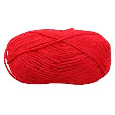
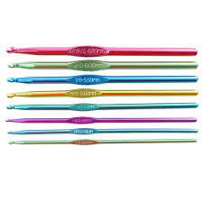
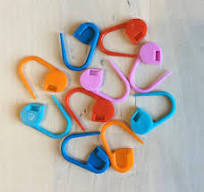

Introduction
Crochet is the process of creating textiles by using a crochet hook to interlock loops of yarn, thread, or strands of other materials.
The name is derived from the French term croc, which means 'hook'. Hooks can be made from a variety of materials, such as metal, wood, bamboo,or plastic.
Origin
Although knitting has been dated since the 11th century CE,crochet is said to have been developed around the 15-17th century.There is early evidence that the Chinese were making dolls using crochet techniques. It's called Amigurumi. Also, through old techniques such as tambouring as you can visualize today as needlepoint where the fabric is stretched so you can insert a needle through the fabric to pull up a loop. It's said that the chain stitch was achieved which may have been responsible for thinking what can thread do if it's looped without going through a fabric first.
Crochet at one time was made for other pieces, maybe a collar for a top or even expanding into full-size projects such as table cloths. It was detailed and very intricate. It was a skill learned and trading existed to help families have work. It wasn't uncommon that men and women were involved in the early stages of crochet.
history-of-crochet
crochet-wikipedia
Materials needed
In order for you to begin making your crochet items you will need these materials.
Yarn Crochet Hook Sticth Markers Darning needle  
Types of stitches
There are six main types of basic stitches. Namely;
Chain stitch which is the most basic of all stitches and is used to begin most projects.
Slip stitch which is used to join chain stitch to form a ring.
Single crochet stitch.
Half-double crochet stitch.
Double crochet stitch
Treble.
Note: The terminologies may change depending on American and British English.